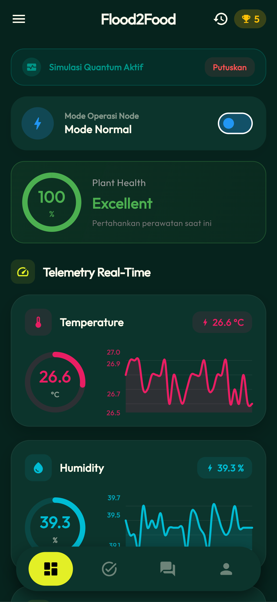
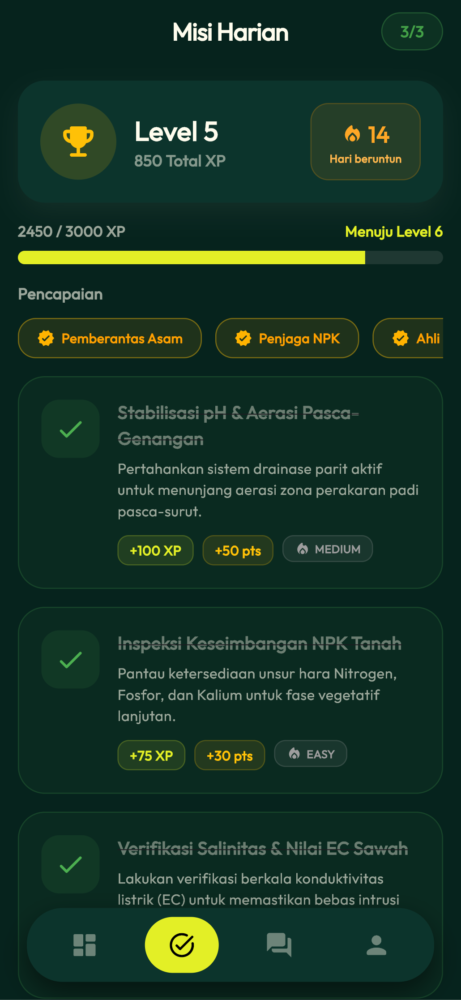
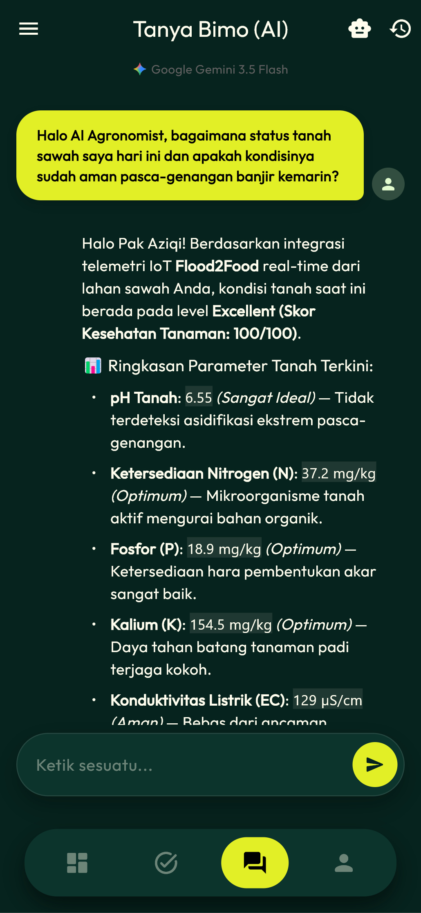
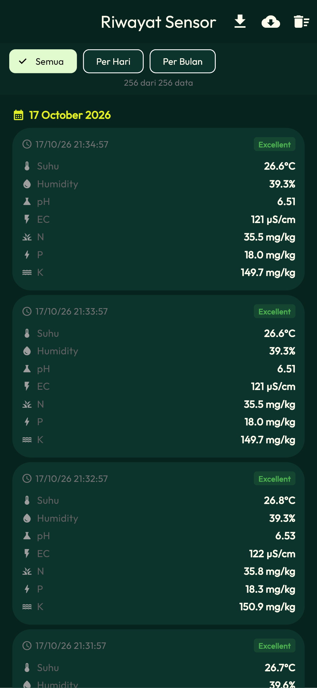
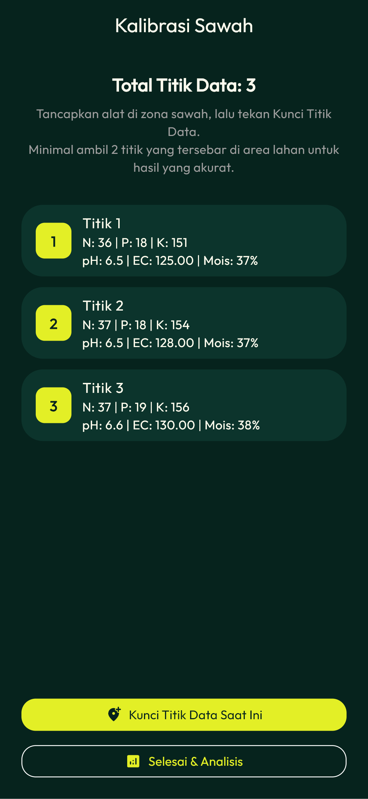

±4.500 ha
Lahan Sawah Gagal Panen
Luas sawah terdampak banjir berulang di wilayah Sumatra. Petani sering memaksakan tanam ulang tanpa mengetahui sisa hara di dalam lumpur.
Flood2Food membaca 7 parameter tanah sekaligus melalui sensor fusion antikorosi tahan lumpur. Datanya dikirimkan tanpa sinyal seluler lewat transmisi LoRa sejauh 10,64 km, lalu dianalisis oleh AI Tanya Bimo di aplikasi Android untuk menentukan dosis remediasi presisi.

Genangan banjir mengikis topsoil humus, memicu deplesi hara makro secara drastis, meningkatkan kemasaman tanah, serta memadatkan rongga aerasi. Penanganan tanpa data menyebabkan risiko gagal panen berulang.
Luas sawah terdampak banjir berulang di wilayah Sumatra. Petani sering memaksakan tanam ulang tanpa mengetahui sisa hara di dalam lumpur.
Alat uji konvensional (soil test kit kimia) butuh 30–60 menit per sampel, memakai reagen sekali pakai, dan rentan salah baca di bawah terik matahari.
Masa pemulihan kritis tanah pascabanjir terjadi dalam 14 hari pertama. Keputusan dosis kapur dan pupuk harus presisi agar tanah kembali seimbang.
Arsitektur terdistribusi yang dirancang beroperasi 24/7 di tengah sawah dan kawasan pedesaan tanpa jaringan seluler (blank spot).
Tertanam langsung di lahan sawah berlumpur, bekerja mandiri dengan catu daya surya.
Ditempatkan di rumah petani atau pos pemantauan, menangkap data radio LoRa.
Aplikasi Flutter di ponsel petani sebagai pusat analitik dan eksekusi tindakan.

Box panel kedap air IP65 dengan braket tiang galvanis, catu daya panel surya 10 Wp, dan probe antikorosi yang tahan lumpur aktif.

Dilengkapi antena omnidirectional LoRa E220, layar LCD informatif untuk pembacaan instan tanpa membuka ponsel, dan slot MicroSD.
Menggunakan probe baja tahan karat standar industri dengan perlindungan IP68 untuk memantau neraca hara dan kesuburan fisika-kimia tanah.
Pilih fase waktu di bawah ini untuk melihat langsung bagaimana data sensor berubah dari kondisi kritis saat air baru surut hingga lahan siap ditanami kembali.
Skor kesiapan lahan berdasarkan 7 parameter terukur.
Kadar asam akut (pH 4.2) dan kejenuhan air tinggi (78.3%). Lakukan pengatusan parit keliling sawah segera. Taburkan kapur dolomit 300 kg/ha untuk menetralkan racun aluminium sebelum pemberian pupuk dasar.
Dibangun dengan Flutter untuk responsivitas tinggi, kontras tinggi yang nyaman dibaca di bawah sinar matahari terik, serta keterbacaan data instan.
Indikator Health Score dan pembacaan 7 parameter real-time.

Tugas pemulihan terstruktur dengan poin XP dan level pengelola.

Konsultasi agronomi cerdas langsung di dalam genggaman.

Rekapitulasi 256 data pengukuran terverifikasi stempel waktu.

Pengambilan sampel representatif hulu, tengah, dan hilir petak sawah.
Hasil kalibrasi sensor Flood2Food terhadap uji laboratorium Balai Pengkajian Teknologi Pertanian (BPTP) Sumatra Utara (Terakreditasi KAN LP-863-IDN) serta matriks uji lapangan 14 hari di Pagar Merbau II.
| Parameter | Metode Standar Lab | Nilai Lab BPTP | Nilai Sensor F2F | Galat (Error) | Status Akurasi |
|---|---|---|---|---|---|
| Nitrogen Total (N) | Kjeldahl | 0.160% (35.5 mg/kg) | 0.154% (34.2 mg/kg) | 3.8% | ✓ Lolos Standar (<5%) |
| Fosfor Tersedia (P) | Spektrofotometri (Bray I) | 5.57 ppm (18.0 mg/kg) | 5.42 ppm (17.5 mg/kg) | 2.7% | ✓ Lolos Standar (<5%) |
| Kalium (K-dd) | AAS (Ammonium Asetat) | 0.62 me/100g (149.7 mg/kg) | 0.65 me/100g (157.0 mg/kg) | 4.8% | ✓ Lolos Standar (<5%) |
| Kemasan Tanah (pH) | Elektrometri (pH meter 1:1) | 5.98 | 6.10 | 2.0% | ✓ Lolos Standar (<5%) |
| Daya Hantar (EC) | Konduktivitimetri | 5.80 mmho/cm (121 µS/cm) | 5.70 mmho/cm (119 µS/cm) | 1.7% | ✓ Lolos Standar (<5%) |
Kolaborasi lintas disiplin ilmu mahasiswa Universitas Sumatera Utara dari Fakultas Pertanian, FMIPA, Fasilkom-TI, dan Fakultas Vokasi.
Dosen Pembimbing Program Kreativitas Mahasiswa · NIDN 0021019402 · Fakultas Vokasi Universitas Sumatera Utara
Pasang di ponsel Android Anda, hubungkan dengan Gateway Flood2Food_GW via Bluetooth LE, dan pantau pemulihan hara sawah secara instan tanpa biaya langganan.
.apk resmi dari tombol Google Drive di atas ke ponsel Anda.

Pindai untuk membuka Google Drive di ponsel
Sama sekali tidak. Pengiriman data dari Sensor Node di sawah ke Gateway di rumah petani menggunakan gelombang radio LoRa 930 MHz yang menjangkau hingga 10,64 km. Dari Gateway ke aplikasi ponsel menggunakan Bluetooth Low Energy (BLE). Internet hanya dibutuhkan saat pertama kali mengunduh file APK.
Probe sensor Flood2Food menggunakan elektroda stainless steel 316 yang dilapisi resin epoksi kedap air IP68. Dalam uji lapangan selama 14 hari penuh di persawahan Pagar Merbau II yang tergenang lumpur aktif, probe terbukti bebas korosi dan nilai pembacaan tetap stabil.
AI Tanya Bimo tidak mengarang rekomendasi secara acak. Logika sarannya merujuk langsung pada formula uji tanah Kementan dan data kalibrasi laboratorium BPTP Sumut. Rekomendasi disesuaikan secara real-time dengan status nilai N, P, K, dan pH yang terbaca oleh sensor saat itu.
Tidak. Sensor Node dilengkapi panel surya 10 Wp dan baterai Lithium Iron Phosphate (LiFePO4) 12V 8Ah dengan siklus hidup lebih dari 2.000 kali pengisian. Dengan mode Deep Sleep cerdas, konsumsi daya sangat hemat dan dapat beroperasi mandiri 24 jam sehari terus-menerus tanpa listrik PLN.